| ✅ | ✅ | ✅ | ✅ | ✅ | ✅ |
|---|
Other blocks¶
Most blocks correspond directly to one of the documented Python commands. This page lists the remaining blocks.
This page will be expanded with more details in the next release.
Math¶
See also umath for other math operations.


Logic¶



Flow¶


Device and system setup¶
Waiting¶

Variables¶
Multitasking¶
